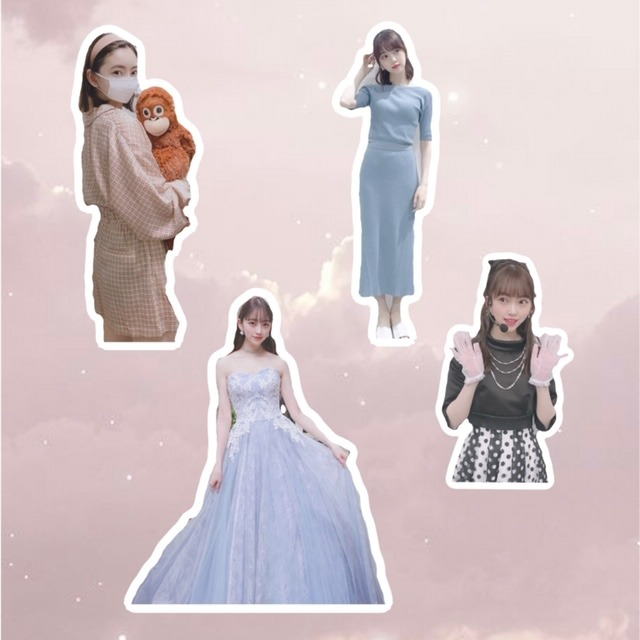
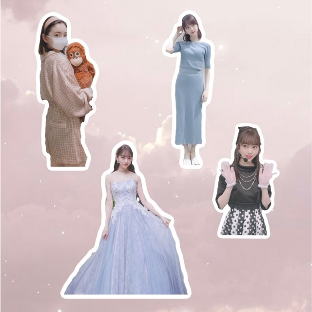

2020/0525Mon@horimiona2nd
こんにちは
最近はゆでたまごにハマっています
黄身より白身が好きです^o^

お気に入りの写真でコラージュしてみました！
こうやってみると強めの色より

お気に入りの写真でコラージュしてみました！
こうやってみると強めの色より
淡い色が好きだなぁ〜と
そして
連日インスタライブやSHOWROOMを
やらせていただいていますが皆さん
みに来てくださりありがとうございます
同じ話を何回もしていたらすみません...>_<...
質問にも答えようと思うので
質問募集します！
#未央奈への質問
をつけてコメントください
755やInstagramなどのsnsの
コメントもみてます〜
温かいコメント
ありがとうございます^o^
ありがとうございます^o^
光と影
2nd写真集
いつかの待ち合わせ場所
発売まであと2日✨
予約どこでしよーと悩んでいる方は
こちらをご覧くださいっ
お姉ちゃんは水色のワンピースで
海にいるカットが特に好きみたいです♡
うれしい♡
昨日お風呂でアナスターシャのmvみてたら
泣けてきました
好きだなぁ
そして今朝公開された新曲
#世界中の隣人よ の感想も
お待ちしています！
間に挟まれる写真や映像が個人的に好きです
プティくんも出演しました〜
地球が丸いのには理由があるように
みなさんが今この時代に生きているのにも
理由が必ずあると思います
傷つけ合うのではなく、弱さに気づいて
寄り添って、支え合って
生きていけたらいいですよね
ではでは
2020/05/25 14:36
コメント(436)
ブログ更新ありがとうございます！！
ずっと気になってるのがカメラのアプリを教えて欲しいです
みおなちゃんと同じフィルターで友達と自撮りしたいなと思って初めてコメントしてみました！！
自粛で大変なこともあるかと思いますがお体ご自愛ください！ いつも可愛くて刺激受けてます。
いつも可愛くて刺激受けてます。
ずっと気になってるのがカメラのアプリを教えて欲しいです
みおなちゃんと同じフィルターで友達と自撮りしたいなと思って初めてコメントしてみました！！
自粛で大変なこともあるかと思いますがお体ご自愛ください！
写真集をお母さんに見てもらって褒められたって言ってたけど、どんなこと言われたの〜？？
気になります！！
#未央奈への質問
気になります！！
#未央奈への質問
世界中の隣人よ、素敵な曲でした。
また乃木坂の皆さんを観られる日を楽しみにしています。
また乃木坂の皆さんを観られる日を楽しみにしています。
ブログ更新ありがとう！
質問です
みおなが乃木坂の曲の中で一番好きなのは何ですか？
質問です
みおなが乃木坂の曲の中で一番好きなのは何ですか？
未央奈ちゃんこんにちは‼ありがとうございます！楽しみにしてます‼写真集楽しみにしてます！頑張ります‼頑張って下さい！気をつけて下さい
大事な人は自分で守りにいかないといけないなって思った。
新曲は卒業メンバーがいて感動したのかうるっとしちゃったよ
#未央奈への質問
バイオハザード7は無事にクリアできたのか気になるのと、今はあつもり以外でやってるゲームはあるんですか!
新曲は卒業メンバーがいて感動したのかうるっとしちゃったよ
#未央奈への質問
バイオハザード7は無事にクリアできたのか気になるのと、今はあつもり以外でやってるゲームはあるんですか!
ブログ更新ありがとう！
世界中の隣人よ見ました！素敵な曲ですね。感動しました。
アナスターシャも好き！写真集も明後日ですね、楽しみ！
#未央奈への質問
・バイオハザードの好きなシリーズ、キャラクターを教えてほしいです！
・何か勉強してみたいことはありますか？
世界中の隣人よ見ました！素敵な曲ですね。感動しました。
アナスターシャも好き！写真集も明後日ですね、楽しみ！
#未央奈への質問
・バイオハザードの好きなシリーズ、キャラクターを教えてほしいです！
・何か勉強してみたいことはありますか？
好き〜〜(^^)
いつも元気もらってます
ありがとうございます
ありがとうございます
かわいいー
未央奈ブログ更新♪ o(≧▽≦)o ♪ありがとｯ
世界の隣人よいい曲だったね
世界の隣人よいい曲だったね
どんな人も寄り添って困ってることがある人がいたら手を差し伸べられるそんな人が増えたらいいですね。
#未央奈への質問
今回の写真集にて1番思い出に残ってる場所はどこでしたか？
#未央奈への質問
今回の写真集にて1番思い出に残ってる場所はどこでしたか？
ブログ更新ありがとう！
俺も白身の方が好き！
コラージュ、ホントうまいなぁ！センス炸裂しとる！
お互いがお互いのことを思い合って優しくなれる世界にしたいよね！
世界中の隣人よの動画観たよ！すごい良い曲だし、MVもすごい良かった！
プティくんも可愛い！
#未央奈への質問
またラジオのパーソナリティをやる事になったら、どんな番組にしたいですか？
俺も白身の方が好き！
コラージュ、ホントうまいなぁ！センス炸裂しとる！
お互いがお互いのことを思い合って優しくなれる世界にしたいよね！
世界中の隣人よの動画観たよ！すごい良い曲だし、MVもすごい良かった！
プティくんも可愛い！
#未央奈への質問
またラジオのパーソナリティをやる事になったら、どんな番組にしたいですか？
ブログ更新ありがとう
誰も端っこで泣かないようにするために地球は丸いんですよね
#未央奈への質問
ゆでたまごには塩をつける派ですか？つけない派ですか？
ゆでたまごには塩をつける派ですか？つけない派ですか？
更新ありがとう！！今日の写真もとってもかわいいです
#未央奈への質問
インスタに載せていたすいかジュースの作り方教えてください！！！
マスクしててもかわいいメイク、あったら教えてください！！
もうすぐ学校も始まりますね！学生にエールください！
夏っぽいメイクってどうしたらいいですか？？
日焼け止めはどのくらい塗っていますか？？
毎日のモチベってありますか？？
多くてごめんなさい！未央奈ちゃんいつも応援しています！
#未央奈への質問
インスタに載せていたすいかジュースの作り方教えてください！！！
マスクしててもかわいいメイク、あったら教えてください！！
もうすぐ学校も始まりますね！学生にエールください！
夏っぽいメイクってどうしたらいいですか？？
日焼け止めはどのくらい塗っていますか？？
毎日のモチベってありますか？？
多くてごめんなさい！未央奈ちゃんいつも応援しています！
未央奈ちゃん大好き。
未央奈さんブログ更新ありがとうございます！
写真集発売まであと2日になりましたね！とても楽しみです！\( *°ω°* )/ﾔｯﾀ-!!
アナスターシャいいですよね俺大好きです！
そして世界中の隣人よのMV見ました！
卒業生が出てきてとても嬉しかったです！！
もちろん皆さん可愛いです！
特に良かったのが未央奈さんが愛犬を抱っこしてるのがとても可愛いいです！（何回でも見れる）
これからも体調に気を付けて生活しないと行けないのでもちろん未央奈さんも体調にはお気を付けください！
#未央奈さんへの質問
最近体を鍛えているのですが、未央奈さんは体がムキムキの人は好きでしょうか？
写真集発売まであと2日になりましたね！とても楽しみです！\( *°ω°* )/ﾔｯﾀ-!!
アナスターシャいいですよね俺大好きです！
そして世界中の隣人よのMV見ました！
卒業生が出てきてとても嬉しかったです！！
もちろん皆さん可愛いです！
特に良かったのが未央奈さんが愛犬を抱っこしてるのがとても可愛いいです！（何回でも見れる）
これからも体調に気を付けて生活しないと行けないのでもちろん未央奈さんも体調にはお気を付けください！
#未央奈さんへの質問
最近体を鍛えているのですが、未央奈さんは体がムキムキの人は好きでしょうか？
#未央奈への質問
◎未央奈の全身コーデ見たいです
◎MV・歌詞・曲でそれぞれ一番好きな曲はなんですか?
#世界中の隣人よ
プティくんと、遊んでいるところが可愛かったです!!
卒業メンバーさんもたくさん居て凄かったです!!
■未央奈のブログの感想
コラージュのやつ、使いたいなって思いました〜!!
（適当でごめんなさいm(_ _)m ）
）
◎未央奈の全身コーデ見たいです
◎MV・歌詞・曲でそれぞれ一番好きな曲はなんですか?
#世界中の隣人よ
プティくんと、遊んでいるところが可愛かったです!!
卒業メンバーさんもたくさん居て凄かったです!!
■未央奈のブログの感想
コラージュのやつ、使いたいなって思いました〜!!
（適当でごめんなさいm(_ _)m
堀ちゃん毎日ブログ更新ありがとう！
今日の朝、世界中の隣人を聴いて、涙がこぼれました！
コロナウイルスの暗い、ニュースも忘れることが出来ました！
写真集の発売が、待ち遠しいです！
明後日の、レコメンも楽しみです！
堀ちゃんにずっきゅーん！
今日の朝、世界中の隣人を聴いて、涙がこぼれました！
コロナウイルスの暗い、ニュースも忘れることが出来ました！
写真集の発売が、待ち遠しいです！
明後日の、レコメンも楽しみです！
堀ちゃんにずっきゅーん！
#世界中の隣人よ のMV見させていただきました。乃木坂メンバーに加えてOGのみなさんも参加していましたね。スゴく勇気をもらいました。コロナに負けないように僕も頑張ります。
世界中の隣人よ めちゃくちゃいい曲で感動しました！！
卒業生も出てたなんて見た瞬間驚きました！！
コロナに負けず頑張りましょう！！
卒業生も出てたなんて見た瞬間驚きました！！
コロナに負けず頑張りましょう！！
素敵です、本当に素敵な人です。
未央奈さんに出会えて良かった、乃木坂に出会えて良かった。
改めてそう思わせてもらえる新曲とブログでした、ありがとう。
未央奈さんに出会えて良かった、乃木坂に出会えて良かった。
改めてそう思わせてもらえる新曲とブログでした、ありがとう。
アナスターシャめっちゃ好き！！
世界中の隣人よで未央奈の犬めっちゃ可愛かったし
いい歌でした！
世界中の隣人よで未央奈の犬めっちゃ可愛かったし
いい歌でした！
ブログ更新ありがとうございます！
アナスターシャ毎日見てます、そして聴いてます
乃木坂の曲の中で一番好きです
やっぱり二期生最高だなぁと思います！
世界中の隣人よ、聴きました！
写真集もいよいよ明後日、本当に楽しみです！
お体に気を付けてお過ごしください
アナスターシャ毎日見てます、そして聴いてます
乃木坂の曲の中で一番好きです
やっぱり二期生最高だなぁと思います！
世界中の隣人よ、聴きました！
写真集もいよいよ明後日、本当に楽しみです！
お体に気を付けてお過ごしください
未央奈へ
傷つけ合うのではなく、弱さに気づいて
寄り添って、支え合って
生きていけたらいいですよね。
ありがとう！
元気でいてね！
また会えることを 信じて！
YELL
傷つけ合うのではなく、弱さに気づいて
寄り添って、支え合って
生きていけたらいいですよね。
ありがとう！
元気でいてね！
また会えることを 信じて！
YELL
未央奈ちゃん、ブログ更新ありがとう！
写真集発売いよいよやね！
楽しみにしてるよ！
世界中の隣人よのMVめっちゃ良かった!!
早くライブができる日がくるといいね…
#未央奈への質問
最近料理で何作る??
またね！
写真集発売いよいよやね！
楽しみにしてるよ！
世界中の隣人よのMVめっちゃ良かった!!
早くライブができる日がくるといいね…
#未央奈への質問
最近料理で何作る??
またね！
堀ちゃんは僕の支えです！
#未央奈への質問
未央奈ちゃんが今まで生きてきた中で一番美味しかった食べ物はなんですか？
未央奈ちゃんが今まで生きてきた中で一番美味しかった食べ物はなんですか？
未央奈ブログ更新ありがとうー！
俺の黄身より白いの好き！
質問前回のやつに送ったから返答して欲しいな！
でぱぱ
俺の黄身より白いの好き！
質問前回のやつに送ったから返答して欲しいな！
でぱぱ
未央奈ちゃんブログ更新ありがとう！！
可愛いお写真いつもありがとう！
未央奈ちゃんがくすみブルーや、くすみピンクが好きってゆってたからゆきもついついその色を選んじゃうくらい好きになりました笑
今日アップトゥボーイやっっっと届いて読めたんです！！
未公開カットなのにこんなに可愛すぎるの！？ってくらいもうほんとに可愛くて綺麗で、、
色んな表情が見れて嬉しかったし、クシャッとした笑顔もかわいくて、、やっぱり1番の憧れで、1番大好きな人だなぁと改めてしみじみ思ってました
｢世界中の隣人よ｣みました！
この時期だからこそ、たくさんの人に届いて欲しいなぁって思って友達におすすめしてみたり、歌詞がすごく心に刺さって考えさせられることが沢山ありました。
プティくんと戯れてるのかわいすぎました！⸜❤︎⸝
最近は自分のことがあまり好きになれないし、暗くなることも多いけどきっと全部に意味があるんだなぁって思って頑張ってます
学校も不安だけどがんばらないと、！！
未央奈ちゃんのおかげで毎日楽しく生活できてる！って言っても過言じゃないくらい沢山助けられています。
いつもありがとうございます
私に出来るのはSNSにコメントしたりすることしかないけど、Instagramはじめ、沢山コメントがんばります！笑
大好き！
可愛いお写真いつもありがとう！
未央奈ちゃんがくすみブルーや、くすみピンクが好きってゆってたからゆきもついついその色を選んじゃうくらい好きになりました笑
今日アップトゥボーイやっっっと届いて読めたんです！！
未公開カットなのにこんなに可愛すぎるの！？ってくらいもうほんとに可愛くて綺麗で、、
色んな表情が見れて嬉しかったし、クシャッとした笑顔もかわいくて、、やっぱり1番の憧れで、1番大好きな人だなぁと改めてしみじみ思ってました
｢世界中の隣人よ｣みました！
この時期だからこそ、たくさんの人に届いて欲しいなぁって思って友達におすすめしてみたり、歌詞がすごく心に刺さって考えさせられることが沢山ありました。
プティくんと戯れてるのかわいすぎました！⸜❤︎⸝
最近は自分のことがあまり好きになれないし、暗くなることも多いけどきっと全部に意味があるんだなぁって思って頑張ってます
学校も不安だけどがんばらないと、！！
未央奈ちゃんのおかげで毎日楽しく生活できてる！って言っても過言じゃないくらい沢山助けられています。
いつもありがとうございます
私に出来るのはSNSにコメントしたりすることしかないけど、Instagramはじめ、沢山コメントがんばります！笑
大好き！
あと2日！
インスタライブ、showroom、どっちも見たよ！
自粛生活の中ですが、可愛い堀ちゃんに元気を貰いました！
#世界中の隣人よ、最高でした！初めての試みである現メンバーとOGとのコラボ、凄く良かったです！間奏のメンバーの映像もみんなの生活が覗き見出来て、凄く良かったです！
この歌の様に、世界中で協力したいですね！
ちなみに僕も昨日、「アナスターシャ」のMV見ました！
インスタライブ、showroom、どっちも見たよ！
自粛生活の中ですが、可愛い堀ちゃんに元気を貰いました！
#世界中の隣人よ、最高でした！初めての試みである現メンバーとOGとのコラボ、凄く良かったです！間奏のメンバーの映像もみんなの生活が覗き見出来て、凄く良かったです！
この歌の様に、世界中で協力したいですね！
ちなみに僕も昨日、「アナスターシャ」のMV見ました！
ブログの更新ありがとう☺︎
アナスターシャ！いい曲〜！
世界中の隣人よ！！
朝から涙が…
卒業生も出てくれて、
みんなの顔も見れて、
とてもいい曲だと思いました！
#未央奈に質問
・モチベーションをあげる時は何をしますか？？
・5月が誕生日なので祝ってください！！
（誕生日の方は5月過ぎちゃっても大丈夫です！）
→ちなみにもうすぐです！（30日）
答えてくれたら嬉しいです！！
今後のブログも楽しみに待ってます！
体調には気をつけてね！
応援してます！
大好きです♡
写真集待ち遠しいです！
早く買いたい！！
アナスターシャ！いい曲〜！
世界中の隣人よ！！
朝から涙が…
卒業生も出てくれて、
みんなの顔も見れて、
とてもいい曲だと思いました！
#未央奈に質問
・モチベーションをあげる時は何をしますか？？
・5月が誕生日なので祝ってください！！
（誕生日の方は5月過ぎちゃっても大丈夫です！）
→ちなみにもうすぐです！（30日）
答えてくれたら嬉しいです！！
今後のブログも楽しみに待ってます！
体調には気をつけてね！
応援してます！
大好きです♡
写真集待ち遠しいです！
早く買いたい！！
更新ありがとうございます
『世界中の隣人よ』聞きましたー！
プティくんと楽しそうにしてる未央奈さん
可愛すぎでした
アナスターシャもよく聞いています
ホントにいい曲ですよね
質問です！
未央奈さんの日焼け対策を教えて下さい
私すごく焼けやすくて真っ黒になって
しまうのです
写真集発売まであと2日ですね
楽しみにしてます！
ではでは
『世界中の隣人よ』聞きましたー！
プティくんと楽しそうにしてる未央奈さん
可愛すぎでした
アナスターシャもよく聞いています
ホントにいい曲ですよね
質問です！
未央奈さんの日焼け対策を教えて下さい
私すごく焼けやすくて真っ黒になって
しまうのです
写真集発売まであと2日ですね
楽しみにしてます！
ではでは
ブログ更新ありがと
未央奈今日もかわいい
写真集が楽しみ！
あおいまる
未央奈今日もかわいい
写真集が楽しみ！
あおいまる
世界中の隣人よ、本当に感動しました。
日本のアイドル界の王道を行く乃木坂だからこそ出来ることだし、
逆に言えばアイドル界の王道としてやらなければいけない使命でもあると思う。
この曲聴いて、約2ヶ月自粛に耐えた自分を少しだけ褒めてあげたくなったし、もうちょっと頑張ろうと思えた。
乃木坂ってやっぱ素晴らしいなー。
いつも幸せと感動をありがとう！
日本のアイドル界の王道を行く乃木坂だからこそ出来ることだし、
逆に言えばアイドル界の王道としてやらなければいけない使命でもあると思う。
この曲聴いて、約2ヶ月自粛に耐えた自分を少しだけ褒めてあげたくなったし、もうちょっと頑張ろうと思えた。
乃木坂ってやっぱ素晴らしいなー。
いつも幸せと感動をありがとう！
昨日のSHOWROOMありがとうございました！
質問です！
僕は乃木坂初心者なので未央奈さんの思う乃木坂の良さを教えて下さい。
乃木坂のいい所をもっと知って乃木坂を応援したいと思います。
よろしくお願いします!
質問です！
僕は乃木坂初心者なので未央奈さんの思う乃木坂の良さを教えて下さい。
乃木坂のいい所をもっと知って乃木坂を応援したいと思います。
よろしくお願いします!
ブログ更新ありがとう！
コラージュされてる写真、全部可愛すぎる…！特に右の2枚は載せてくれた時あまりの可愛さに衝撃を受けた写真だし大好き！
未央奈ちゃんのトーク大好きだからインスタライブもSHOWROOMも幸せすぎたよ〜SNSもたくさん更新してくれて、コメントも読んでくれてありがとう⸜(*ˊᵕˋ*)⸝
写真集の発売まで後ちょっとだね！お姉さんが好きなカットを探すの楽しみだなぁ。
世界中の隣人よ、すごくすごく素敵だった…
イントロも歌声の層もMVもすごく乃木坂って感じで好きだなぁと思ったし、歌詞を噛みしめながら映像を観ると泣けてきました。
差し込まれる自粛期間の街の写真もフィルムっぽくて素敵だったし、カメラに近付いてくる未央奈ちゃんが可愛い！プティくんMV初出演だね︎☺︎
自粛期間でストレスが溜まって言葉の暴力が蔓延しがちな世の中だと思うけど、こんな時こそみんなで支え会えたらいいよね。
コラージュされてる写真、全部可愛すぎる…！特に右の2枚は載せてくれた時あまりの可愛さに衝撃を受けた写真だし大好き！
未央奈ちゃんのトーク大好きだからインスタライブもSHOWROOMも幸せすぎたよ〜SNSもたくさん更新してくれて、コメントも読んでくれてありがとう⸜(*ˊᵕˋ*)⸝
写真集の発売まで後ちょっとだね！お姉さんが好きなカットを探すの楽しみだなぁ。
世界中の隣人よ、すごくすごく素敵だった…
イントロも歌声の層もMVもすごく乃木坂って感じで好きだなぁと思ったし、歌詞を噛みしめながら映像を観ると泣けてきました。
差し込まれる自粛期間の街の写真もフィルムっぽくて素敵だったし、カメラに近付いてくる未央奈ちゃんが可愛い！プティくんMV初出演だね︎☺︎
自粛期間でストレスが溜まって言葉の暴力が蔓延しがちな世の中だと思うけど、こんな時こそみんなで支え会えたらいいよね。
ブログ更新ありがとうございます！
連日のようにインスタライブやSHOWROOMで堀ちゃんが見られて幸せです。楽しい話が聞けて、笑ってる堀ちゃんが見られて本当に毎日充実しています。もちろんブログもです。
今日の写真はパッチリした目が特に可愛いです！
「世界中の隣人よ」今は皆我慢の連続で、ストレスも溜まって誰かに当たりたくなってしまう事が多くなっている気がします。でもそれはまた誰かを傷つけ、ストレスを溜めさせる行為になる。だからこそ身近な誰か、隣人を思いやり、弱さをカバーし合える行動ができたらいいですよね。
堀ちゃんにたくさんの幸せを与えられているので、僕もやっぱり何か返していきたいし、堀ちゃんを守ってあげる温かい言葉をかけていきます。
長くなりましたが、今日はこのあたりで。またコメントします。
連日のようにインスタライブやSHOWROOMで堀ちゃんが見られて幸せです。楽しい話が聞けて、笑ってる堀ちゃんが見られて本当に毎日充実しています。もちろんブログもです。
今日の写真はパッチリした目が特に可愛いです！
「世界中の隣人よ」今は皆我慢の連続で、ストレスも溜まって誰かに当たりたくなってしまう事が多くなっている気がします。でもそれはまた誰かを傷つけ、ストレスを溜めさせる行為になる。だからこそ身近な誰か、隣人を思いやり、弱さをカバーし合える行動ができたらいいですよね。
堀ちゃんにたくさんの幸せを与えられているので、僕もやっぱり何か返していきたいし、堀ちゃんを守ってあげる温かい言葉をかけていきます。
長くなりましたが、今日はこのあたりで。またコメントします。
未央奈！
写真集絶対買うね〜
「世界中の隣人よ」めっちゃ泣いた。
感動したよ。
◉質問
東京の好きなところは？
体調に気を付けて頑張ってね！
大好き
写真集絶対買うね〜
「世界中の隣人よ」めっちゃ泣いた。
感動したよ。
◉質問
東京の好きなところは？
体調に気を付けて頑張ってね！
大好き
未央奈ちゃんブログありがとう！！
コラージュ画像可愛い！！私も淡い色の方が好きです！！
#世界中の隣人よめっちゃ感動しました！！
この期間未央奈ちゃんに会えないの悲しすぎるけどまた収束して会える日が来る事祈ってます！！
#未央奈への質問
ANNでお母さんは私より顔がハッキリしてるって言ってたけど、未央奈ちゃんのお姉ちゃんもハッキリしたお顔なの？
それではまた！！
コラージュ画像可愛い！！私も淡い色の方が好きです！！
#世界中の隣人よめっちゃ感動しました！！
この期間未央奈ちゃんに会えないの悲しすぎるけどまた収束して会える日が来る事祈ってます！！
#未央奈への質問
ANNでお母さんは私より顔がハッキリしてるって言ってたけど、未央奈ちゃんのお姉ちゃんもハッキリしたお顔なの？
それではまた！！
学校始まりました
久しぶりの授業で疲れも溜まって次の日爆睡してしまった…
久しぶりの授業で疲れも溜まって次の日爆睡してしまった…
世界中の隣人よ、心にしみるMVでしたね
未央奈といくちゃんだけワンちゃんと一緒に映ってて癒しでした！
未央奈といくちゃんだけワンちゃんと一緒に映ってて癒しでした！
ブログ更新ありがとう
新曲聴いてくるね
新曲聴いてくるね
世界中の隣人よすごかったね。お姉ちゃんと一緒に聞いたよ
くじ引き引いてきて、トランプあたったよ。
これからも乃木坂の事応援してるよ。
体調に気をつけて頑張ってね〜〜
くじ引き引いてきて、トランプあたったよ。
これからも乃木坂の事応援してるよ。
体調に気をつけて頑張ってね〜〜
#世界中の隣人 今聞いてきました！！
歌詞がほんとその通りだなって思って、元気もらいました
#未央奈への質問
ゆで卵には塩派ですか？？
歌詞がほんとその通りだなって思って、元気もらいました
#未央奈への質問
ゆで卵には塩派ですか？？
世界中の隣人よのMV感動しました！
プティくんもかわいかったです！
もちろん未央奈ちゃんが1番ですよ！！
早く写真集見たい！！
プティくんもかわいかったです！
もちろん未央奈ちゃんが1番ですよ！！
早く写真集見たい！！
新曲感動しました!
写真集も楽しみにしています。
#未央奈への質問
・未央奈ちゃんが弾ける楽器は何ですか？
・仙台で好きな場所はありますか？
・卵は目玉焼き派、スクランブルエッグ派どっちですか？
教えてください!
写真集も楽しみにしています。
#未央奈への質問
・未央奈ちゃんが弾ける楽器は何ですか？
・仙台で好きな場所はありますか？
・卵は目玉焼き派、スクランブルエッグ派どっちですか？
教えてください!


どうして足もウエストも細いのですか？
何かやっていることありますか？
私はすぐニキビができちゃうんだけど
未央奈は肌綺麗だから何かやっていることある？
みおなだいすきだよ！